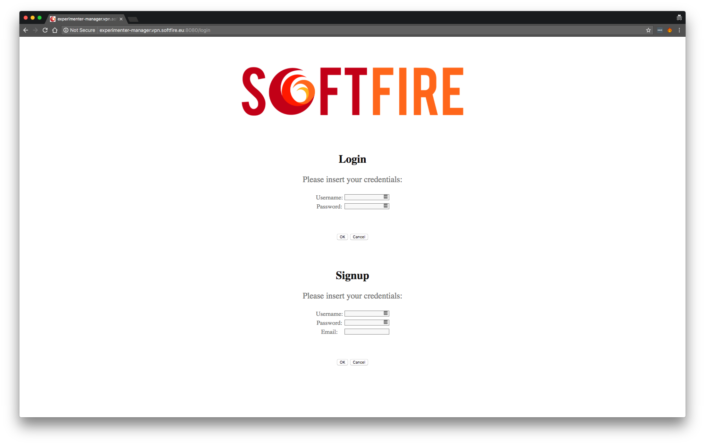

Experiment Manager¶
After having won the Open Call you are officially an Experimenter. First of all, you should have received a certificate that will be used for authentication of the SoftFIRE VPN. Once the SoftFIRE VPN is active you are able to reach this page, the Experimenter Manager. This is the page you will see:

Login¶
Enter your username and password, the password is the same used in the SoftFIRE Web Portal and the username is your name+surname. The Signup is currently disabled
Note
The username must be the same that the one you used while registering.
If the login works correctly you will be redirected on the Experimenter page that looks like the following picture.

Resource discovery¶
By reloading the page, you are also refreshing the list of available resources. These resources have a detailed description and an id. The id will be used in the definition of the experiment, for pointing to the resources you want to reserve. For more details on how to define the experiment, please check the next page.
Resource reservation¶
For reserving resources, you must define an experiment using the TOSCA archive. Then you have to upload this archive file in the input box of Reserve resources section. Once the experiment is reserved you will be able to see it under the Defined experiment section
Resource provisioning¶
Once you have uploaded your experiment CSAR file, you will have a list of chosen resources in the bottom table. The value of the resources will be empty until deployed. By clicking to the "Deploy" button, you will trigger the deployment in the SoftFIRE middleware. The status will change to deployed and you will actually see the content of the deployed resource in the value column.
Resource Termination¶
By clicking to the "Delete" button, you will trigger the removal of all the resources created. You will have to reserve the experiment again in case you want to redeploy